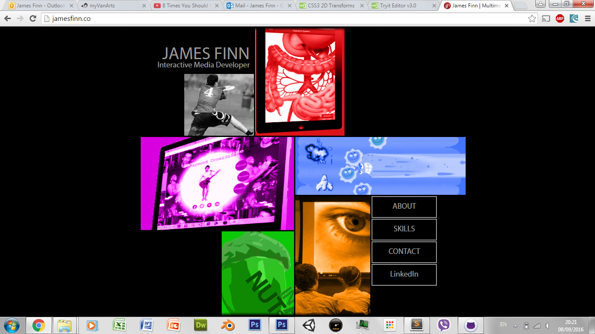

<doctype html>
<html>
	<head>
		<!--<link rel="stylesheet" type="text/css" href="css/css.css">-->
		<title>View my Site</title>
		<!--<script type="text/javascript" src="js/js.js"></script>-->

		<style>
			img {
				/*-ms-transform: skew(0deg, 0deg) scale(1,1) perspective(0px) rotateZ(0deg); /* IE 9 */
			   /* -webkit-transform: skew(0deg, 0deg) scale(1,1) perspective(0px) rotateZ(0deg);*/ /* Safari */
			   /* transform: skew(0deg, 0deg) scale(1,1) perspective(0px) rotateZ(0deg);*/

			    width:500px; position:relative; display:block; margin:auto;
			}

			.t_input {
				width:135px;
			}

			div {
				z-index:100;
				background:coral;
				position:fixed; 
			}

			#skewDiv {
				bottom:0px; left:0px;
			}
			#scaleDiv {
				bottom:0px; right:0px;
			}
			#perspectiveDiv {
				background:lime;
				bottom:70px; right:0px;
			}
			#rotateDiv {
				background:lime;
				bottom:70px; left:0px;
			}

			/*#img1.bottom {
				transform-origin: top;
				transform: perspective(10px) rotateY(-2deg);
			}
			#img1.top {
				transform-origin: bottom;
				transform: perspective(10px) rotateY(-2deg);
			}*/
			#img1 {
				/*transform-origin: right center;
				transform: perspective(10px) rotateY(-1deg);*/
			}
			/*#img1.right {
				transform-origin: left;
				transform: perspective(10px) rotateX(-2deg);
			}*/
		</style>
		<script src="html2canvas.js" type="text/javascript"></script>
		<script>

			function alterSkew() {
				html2canvas(document.getElementById("img1"), {
    onrendered: function(canvas) {
        debugger;
    }
				});
				sxVal  = document.getElementById("sx").value;
				syVal  = document.getElementById("sy").value;
				document.getElementById("i1").value = sxVal;
				document.getElementById("i2").value = syVal;

				bxVal  = document.getElementById("bx").value/100;
				byVal  = document.getElementById("by").value/100;
				document.getElementById("i3").value = bxVal;
				document.getElementById("i4").value = byVal;

				pxVal  = document.getElementById("px").value/2;
				//pyVal  = document.getElementById("py").value;
				document.getElementById("i5").value = pxVal;
				//document.getElementById("i6").value = pyVal;

				//rxVal  = document.getElementById("rx").value;
				ryVal  = document.getElementById("ry").value;
				//document.getElementById("i7").value = rxVal;
				document.getElementById("i8").value = ryVal;


				document.getElementById("img1").style.transform = "skew(" + sxVal + "deg, " + syVal + "deg) scale(" + bxVal + ", " + byVal + ")" + " perspective(" + pxVal + "px)  rotateY(" + ryVal + "deg)";
				//document.getElementById("img1").style.transform = "";
			}

			function alterPerspective() {
				pxVal  = document.getElementById("px").value;
				pyVal  = document.getElementById("py").value;
				document.getElementById("i5").value = pxVal;
				document.getElementById("i6").value = pyVal;


				document.getElementById("img1").style.transform = "perspective(" + pxVal + "deg, " + pyVal + "deg)  rotate(" + bxVal + ", " + byVal + ")";
				//document.getElementById("img1").style.transform = "";   transform: perspective(10px) rotateY(-1deg);
			}
		</script>

	</head>
	<body>
		<h1>View My Site</h1>

		<br/>
		

		<div id="perspectiveDiv">
			<input id="px" onMouseMove="alterSkew()" type="range" value="0" min="-150" max="150"/>
			<!--<input id="py" onMouseMove="alterSkew()" type="range" value="0" min="-2" max="2"/>-->
			<br/>
			<input id="i5" class="t_input"/><input id="i6" class="t_input"/>
		</div>

		<div id="rotateDiv">
			<!--<input id="rx" onMouseMove="alterSkew()" type="range" value="0" min="-2" max="2"/>-->
			<input id="ry" onMouseMove="alterSkew()" type="range" value="0" min="-20" max="20"/>
			<br/>
			<input id="i7" class="t_input"/><input id="i8" class="t_input"/>
		</div>

		<div id="skewDiv">
			<span>Skew L & R</span><span style="margin-left:62px;">Skew Up & Down</span><br/>
			<input id="sx" onMouseMove="alterSkew()" type="range" value="0" min="-45" max="45"/>
			<input id="sy" onMouseMove="alterSkew()" type="range" value="0" min="-45" max="45"/>
			<br/>
			<input id="i1" class="t_input"/><input id="i2" class="t_input"/>
		</div>

		<div id="scaleDiv">
			<input id="bx" onMouseMove="alterSkew()" type="range" value="100" min="1" max="200"/>
			<input id="by" onMouseMove="alterSkew()" type="range" value="100" min="1" max="200"/>
			<br/>
			<input id="i3" class="t_input"/><input id="i4" class="t_input"/>
		</div>
	 
	</body>
</html>